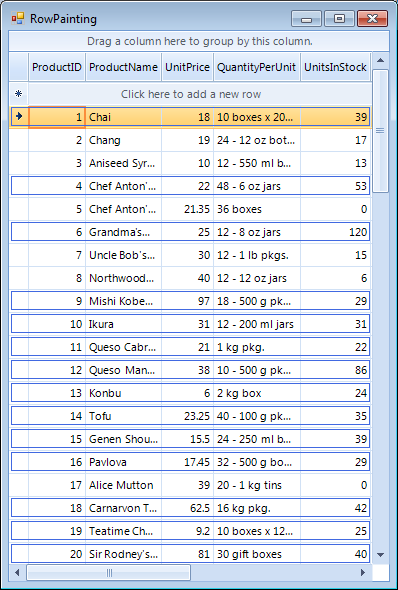

Painting Rows
RowPaint event occurs when a row needs to be painted. If you want to allow the event to fire, you should set
the EnableCustomDrawing to true of the RadGridView control. The scenario for using
the RowPaint event is applied when you want to apply custom painting to extend the row appearance.
[C#]
radGridView1.EnableCustomDrawing = true;
[VB.NET]
RadGridView1.EnableCustomDrawing = True
The following code demonstrates how to use the RowPaint event to set up the row appearance depending
on "UnitsInStock" cell value. If the cell value is more than 20, no
custom painting is applied and the row is drawn as it is by default. Otherwise an additional border is drawn inside the row
to show that this product units in stock is getting lower (less than 20).
When handling this event, you should access the row through the parameters of the event handler rather than access the row directly.
[C#]
private void radGridView1_RowPaint(object sender, GridViewRowPaintEventArgs e)
{
GridDataRowElement dataRow = e.Row as GridDataRowElement;
if (dataRow != null)
{
double value = Convert.ToDouble(dataRow.RowInfo.Cells["UnitsInStock"].Value);
if (value < 20)
{
return;
}
Pen pen = value < 0 ? Pens.Purple : Pens.RoyalBlue;
Size rowSize = dataRow.Size;
rowSize.Height -= 6;
rowSize.Width -= 5;
e.Graphics.DrawRectangle(pen, new Rectangle(new Point(2, 2), rowSize));
}
}
[VB.NET]
Private Sub radGridView1_RowPaint(ByVal sender As Object, ByVal e As GridViewRowPaintEventArgs) Handles RadGridView1.RowPaint
Dim dataRow As GridDataRowElement = TryCast(e.Row, GridDataRowElement)
If dataRow IsNot Nothing Then
Dim value As Integer = Convert.ToInt32(dataRow.RowInfo.Cells("UnitsInStock").Value)
If value < 20 Then
Return
End If
Dim pen As Pen = If(value < 0, Pens.Purple, Pens.RoyalBlue)
Dim rowSize As Size = dataRow.Size
rowSize.Height -= 6
rowSize.Width -= 5
e.Graphics.DrawRectangle(pen, New Rectangle(New Point(2, 2), rowSize))
End If
End Sub
